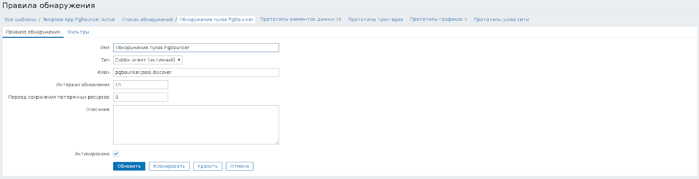
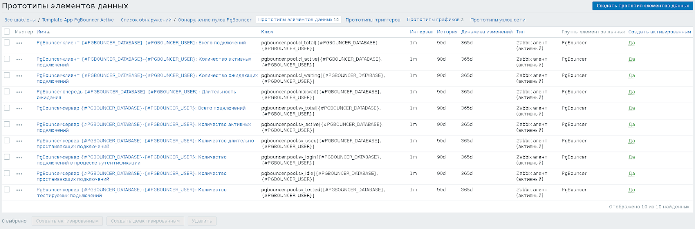
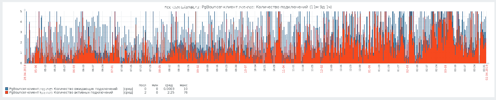
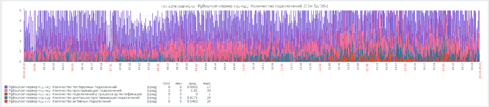
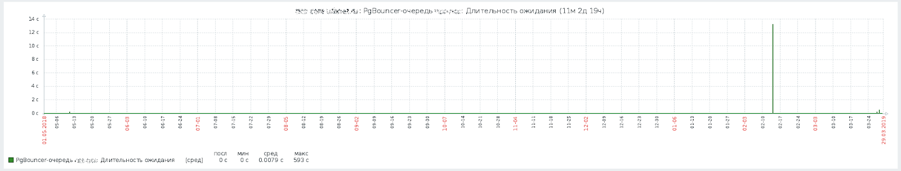

Я уже рассказывал о PgBouncer'е в одной из своих прошлых заметок: Проксирование запросов к PostgreSQL через PgBouncer. PgBouncer - это прокси-сервер для СУБД PostgreSQL, который устанавливает постоянные подключения к серверу PostgreSQL и распределяет по этим постоянным подключениям поступающие подключения от клиентов.
Для уменьшения потребления оперативной памяти нужно стремиться к тому, чтобы пул подключений к серверу PostgreSQL было как можно меньше, т.к. каждое подключение к серверу порождает запуск ещё одного процесса для его обслуживания. С другой стороны, если чрезмерно уменьшить количество подключений к серверу PostgreSQL, то приложения могут успешно устанавливать подключения к PgBouncer'у, но долгое время ожидать освобождения подключения к серверу PostgreSQL, прежде чем смогут выполнить запрос.
Подключения к самому PgBouncer'у обычно обходятся очень дёшево, поэтому нет особого смысла уменьшать их количество, но тем не менее, может оказаться полезно отслеживать и их, т.к. это может помочь в диагностике внутренних проблем в приложении.
Для контроля входящих подключений к PgBouncer'у и использования пула подключений PgBouncer'а к серверу PostgreSQL я решил воспользоваться Zabbix.
Для съёма статистики будем использовать пользователя mon с паролем mon. Впишем в файл /etc/pgbouncer/userlist.txt нового пользователя:
"mon" "mon"
Теперь нужно разрешить этому пользователю просматривать статистику. Для этого откроем файл /etc/pgbouncer/pgbouncer.ini, найдём опцию stats_users. По умолчанию она закомментирована. В таком случае нужно её раскомментировать и прописать одного-единственного пользователя mon. Если же она уже раскомментирована, тогда нужно добавить пользователя mon через запятую к списку имеющихся:
stats_users = mon
Осталось перезагрузить pgbouncer, чтобы новый пользователь получил доступ к статистике PgBouncer'а:
# systemctl reload pgbouncer.service
Скрипт для обнаружения пулов подключений написан на языке командной строки, использует только утилиту psql для подключения к PgBouncer'у и язык awk для разбора результатов запросов:
#!/bin/sh
MON_USER=mon
MON_PASSWORD=mon
PGBOUNCER_PORT=6432
COMMAND=$1
USER=$2
DB=$3
if [ "x$COMMAND" = "xdiscover" ]
then
env PGPASSWORD=$MON_PASSWORD psql -p $PGBOUNCER_PORT -U $MON_USER pgbouncer -t -c 'show pools;' \
| awk -F'|' 'BEGIN { printf "{\"data\":["; n=0; }
/\|/ { if (n != 0)
printf ",";
gsub(" ", "", $1);
gsub(" ", "", $2);
printf "{\"{#PGBOUNCER_DATABASE}\": \"" $1 "\", \"{#PGBOUNCER_USER}\": \"" $2 "\"}";
n++; }
END { printf "]}"; }'
else
env PGPASSWORD=$MON_PASSWORD psql -p $PGBOUNCER_PORT -U $MON_USER pgbouncer -t -c 'show pools;' \
| awk -F'|' \
-v DB=$DB \
-v USER=$USER \
-v COMMAND=$COMMAND '/\|/ { gsub(" ", "", $1);
gsub(" ", "", $2);
if (($1 == DB) && ($2 == USER))
{
if (COMMAND == "cl_active")
{
gsub(" ", "", $3);
print $3;
}
else if (COMMAND == "cl_waiting")
{
gsub(" ", "", $4);
print $4;
}
else if (COMMAND == "cl_total")
{
print $3 + $4;
}
else if (COMMAND == "sv_active")
{
gsub(" ", "", $5);
print $5;
}
else if (COMMAND == "sv_idle")
{
gsub(" ", "", $6);
print $6;
}
else if (COMMAND == "sv_used")
{
gsub(" ", "", $7);
print $7;
}
else if (COMMAND == "sv_tested")
{
gsub(" ", "", $8);
print $8;
}
else if (COMMAND == "sv_login")
{
gsub(" ", "", $9);
print $9;
}
else if (COMMAND == "sv_total")
{
print $5 + $6 + $7 + $8 + $9;
}
else if (COMMAND == "maxwait")
{
gsub(" ", "", $10);
print $10;
}
}
}'
fi
Я поместил его в файле /etc/zabbix/pgbouncer.sh и выставил права доступа, позволяющие редактировать его только пользователю root, а читать и выполнять - пользователями из группы zabbix:
# chown root:zabbix /etc/zabbix/pgbouncer.sh # chmod u=rwx,g=rx,o= /etc/zabbix/pgbouncer.sh
Как можно понять из указанных выше команд, у остальных пользователей доступа к файлу нет. Сделано это на случай, если нужно будет поменять пароль пользователя mon на более безопасный, чтобы никто не мог увидеть этот пароль, посмотрев тело скрипта.
Для того, чтобы использовать данные скрипта из Zabbix'а, нужно добавить в конфигурацию Zabbix-агента /etc/zabbix/zabbix_agentd.conf на том компьютере, где установлен PgBouncer, следующие строчки:
UserParameter=pgbouncer.pool.discover,/etc/zabbix/pgbouncer.sh discover UserParameter=pgbouncer.pool.cl_active[*],/etc/zabbix/pgbouncer.sh cl_active $1 $2 UserParameter=pgbouncer.pool.cl_waiting[*],/etc/zabbix/pgbouncer.sh cl_waiting $1 $2 UserParameter=pgbouncer.pool.cl_total[*],/etc/zabbix/pgbouncer.sh cl_total $1 $2 UserParameter=pgbouncer.pool.sv_active[*],/etc/zabbix/pgbouncer.sh sv_active $1 $2 UserParameter=pgbouncer.pool.sv_idle[*],/etc/zabbix/pgbouncer.sh sv_idle $1 $2 UserParameter=pgbouncer.pool.sv_used[*],/etc/zabbix/pgbouncer.sh sv_used $1 $2 UserParameter=pgbouncer.pool.sv_tested[*],/etc/zabbix/pgbouncer.sh sv_tested $1 $2 UserParameter=pgbouncer.pool.sv_login[*],/etc/zabbix/pgbouncer.sh sv_login $1 $2 UserParameter=pgbouncer.pool.sv_total[*],/etc/zabbix/pgbouncer.sh sv_total $1 $2 UserParameter=pgbouncer.pool.maxwait[*],/etc/zabbix/pgbouncer.sh maxwait $1 $2
После изменения конфигурации нужно перезапустить Zabbix-агента:
# systemctl restart zabbix-agent.service
Я подготовил два шаблона для Zabbix 3.4:
В обоих шаблонах имеется элемент данных для низкоуровневого обнаружения пулов подключений. Обнаружение происходит раз в час:
В шаблонах настроены прототипы элементов данных, позволяющих контролировать количество подключений от клиентов, количество подключений к серверу, а также время ожидания клиента в очереди до получения доступа к одному из свободных подключений к серверу:
Имеются также прототипы графиков, позволяющих следить за клиентскими подключениями, подключениями к серверу и временем ожидания в очереди:
Количество клиентских подключений:
Количество подключений к серверу:
Время ожидания клиента в очереди в ожидании свободного подключения к серверу:
